Les Terres de Kirin Tor
Ère du Renouveau [244]
Lune de la Force [102]
Décade du Panda [53]
Grand Banquet
Un grand banquet, à l'initiative de Heros, vous est proposé, le 7 du Faucon.
Ouvert à la Horde et à l'Alliance, il sera l'occasion d'une rencontre amicale, et d'echange, de nourritures et de boissons typiques à chaque factions.
http://forums-fr.wow-europe.com/thread.aspx?FN=wow-realm-kirintor-fr&T=12772&P=1
Grande fête du Renouveau
Ouvert à la Horde et à l'Alliance, il sera l'occasion d'une rencontre amicale, et d'echange, de nourritures et de boissons typiques à chaque factions.
http://forums-fr.wow-europe.com/thread.aspx?FN=wow-realm-kirintor-fr&T=12772&P=1
[Ouverture du serveur Kirin Tor]
La Grande Fête du Renouveau fut donnée en l'honneur de la trêve fragile unissant encore la Horde et l'Alliance, après les sinistres évènements de la troisième Guerre.
Comme d'habitude, en ce premier jour du Panda, de nombreux jeunes de toutes les races quittèrent le foyer familial et prirent la route pour tenter leur chance dans la vie.
[Faizon] Journal d'un paladin cynique
La Grande Fête du Renouveau fut donnée en l'honneur de la trêve fragile unissant encore la Horde et l'Alliance, après les sinistres évènements de la troisième Guerre.
Comme d'habitude, en ce premier jour du Panda, de nombreux jeunes de toutes les races quittèrent le foyer familial et prirent la route pour tenter leur chance dans la vie.
Il y a des jours, on se pose des questions sur le sens de la vie...[Aërwen] Après l'Eveil, le journal d'Aërwen Telrunyà
Entendez bien, je ne veux pas dire les grandes questions existentielles... Qui suis-je ? D'où viens-je ? Où vais-je ? Ca, c'est plutôt surfait.
Non, je veux tout simplement dire le genre de questions qu'on ... Lire la suite >>>
J?ai quelques souvenirs de l?ancien monde. Des cités majestueuses, des longues chasses dans la forêt d?Ashenvale, des fêtes des saisons, des enseignements de Cenarius à la levée du jour. En ces temps oubliés, Kalimdor était une terre paisible et la vie au bord du puits d?éte ... Lire la suite >>>[Makhata] la fin de l'enfance
[justify]Une vieille rumeur dit que la montée d'une Lune rouge comme le sang est un présage de mauvaise augure, de mort et de désolation, que naître par une nuit de "Lune de Sang" est une malédiction pour l'enfant et la Tribu. Et pourtant....[Meeleloo] Journal de Meeleloo -1
******************
... Lire la suite >>>
Pour la première fois depuis longtemps, je me suis réveillée au milieu de la nuit, en sueur. Je ne me souviens pas du rêve que j'ai fait, mais, une douleur sourde m'enserre la poitrine. ... Lire la suite >>>[Adalynn / Halaa] Une amitié improbable
<<<Reena.>>>[Adalynn / Halaa] Histoire de Banshee
Cela navait pas été facile, mais Halaa, après plusieurs semaines de recherche avait fini par trouver les ingrédients que la société royale des apothicaires lui avait demandé, et cest avec fierté et empressement quelle se dirige ... Lire la suite >>>
Loraya ouvrit les yeux.[Adalynn / Halaa] Histoire de Banshee Suite
Autour d'elle il y avait un spectacle de désolation, des bâtiments en ruines finissaient de se consumer et des restes de créatures humanoïdes jonchaient le sol, elle-même, était étendue, face contre terre ... Sa tête lui faisait mal et elle ne sent ... Lire la suite >>>
- Désolé ce nest pas ce que je voulais dire.[Khinan] Chapitre I -- Remise en question
- Je suis morte, mon corps bouge tant que mon esprit le dirige. Les circonstances de mon meurtre ont fais de moi une Banshee, un esprit de vengeance et de mort. Enfant je pensait que ça nexistait pas, que cétait des ... Lire la suite >>>
Voici un passage de la vie d'un quelconque paladin, Khinan Frostsoul.[Elkatnep] La Quète du Pentacle: Le livre blanc (Prologue)
Ces récits se dérouleront depuis la Première ère (dite Ère du Renouveau) et se prolongeront probablement jusqu'à la Troisième Ère... voire plus ! Bonne lecture à ceux qui passeront par là !
PS : Je tie ... Lire la suite >>>
Prologue: Le tailleur d'Orgrimmar.[Taichin] Rikkyu & Taichin ou l'histoire d'une rencontre
Les jours passent et ne changent pas. La même monotonie envahie chacune de mes pensées à tel point que je n'ai presque plus conscience du jour et de l'heure. Chaque instant passé est perdu à jamais et la vie ne fait que passer inéxorabl ... Lire la suite >>>
Dans une forêt dense et sombre, on peut entendre deux ombres bouger rapidement[Jorian] Rencontre avec Aërwen Telrunyà
Tout à coup, un choc fracassant entre deux objets métalliques comme si il y avait une bataille. Les coups semblent venir de ... Lire la suite >>>

Pour moi, tout a commencé ce jour là. Par une rencontre qui devait bouleverser mon existence.[Aërwen] Rencontre avec Jorian
... Lire la suite >>>

Auberge de la Rose Dorée, Stormwind.[Thim] Frères d'arme
Je reprends ce journal après l?avoir abandonné pendant quelques mois. Les premiers échecs de notre plan nous ont tous découragés, certains ont même quitté l?Ordre. Mais je ne renoncerais pas à ma promesse. Je suis donc retournée à Stor ... Lire la suite >>>
_"Peuh!"[Faizon] Des paladins et de la bière
Thim Nightthief se gratta le menton à travers l'épaisseur impressionnante de sa barbe, rangeant de son autre main une lettre roulée en parchemin.
_"Et viens vite!" qu'il me dit! "Et viens vite" Le nain salua un instant sa demeure, petit et piètre édifice au lo ... Lire la suite >>>
J'ai pu me renseigner un peu sur l'endroit où je me trouve : l';Abbaye de Northshire. Au sud de laquelle se trouve la petite ville de Goldshire, qui sera ma destination de la journée. Enfin, plus exactement son auberge.[Arowän] Une étrange rencontre
Je n'ai jamais été doué d'un sens de l'orientation hor ... Lire la suite >>>
[justify]Le soleil matinal faisait à présent place à un ciel obscur. La haute silhouette, adossée à un vieux chêne, regardait amusée un petit groupe se rassembler devant la taverne de Goldshire. Elle scrutait les visages et les apparences de ces individus suffisamment curieu ... Lire la suite >>>La Compagnie Noire
[Evénement guilde]
Suite aux conseils donnés par l'Archidruide Cenarius deux jours plus tôt, deux Elfes de la Nuit - la druidesse Andaska Coamenel et le guerrier Kharma BlissfulWind - commencent à rassembler la Compagnie Noire.
La Compagnie Noire est un regroupement d'aventuriers veillant dans l'Ombre et protégeant les secrets de la Terre Sauvage depuis des temps immémoriaux.
[Jorian] Début de l'Oubli pour Jorian
Suite aux conseils donnés par l'Archidruide Cenarius deux jours plus tôt, deux Elfes de la Nuit - la druidesse Andaska Coamenel et le guerrier Kharma BlissfulWind - commencent à rassembler la Compagnie Noire.
La Compagnie Noire est un regroupement d'aventuriers veillant dans l'Ombre et protégeant les secrets de la Terre Sauvage depuis des temps immémoriaux.
C'est à partir de ce jour qu'a débuté mon amnésie chronique, un doux enfer : je ne fut jamais clairement conscient de l'atrocité de mon mal. J'oubliais.[Aërwen] Epreuve et échec
[url_new=http://jorian.oubli.free.fr/view_section.php?section_id=1]- Les Carnets de Jorian "l'Oubli" - Introduction[/ur ... Lire la suite >>>
Auberge de la Fierté du Lion, Goldshire.[Faizon] Du murloc
Ce fut une catastrophe. Ces humains ne sont que des incapables ! Et dire que j?ai failli écrire à mes frères et s?urs de l?Ordre pour leur annoncer que cette fois, j?en étais certaine, j?avais trouvé le bon ! Je ne peux que me ... Lire la suite >>>
Ah; je m'élève, frais et dispo, bien imbibé d'alcool : une bonne journée s'annonce ! D'autant plus que je dois retrouver Dame Daemonia dans un camp de bûcherons à l'est de Goldshire. Je vais en profiter pour aller enquêter sur la disparition de deux gardes ; le marshall du v ... Lire la suite >>>[Jorian] Début de l'écriture des Carnets de Jorian, à Stormwind
« ! // ! Je suis revenu à moi tout à l'heure, en plein milieu de l'allée menant à Stormwind... J'ai eu un hoquet en voyant les héros de la cité légendaire me scruter, du haut de leur dizaine de mètre... Je m'appelle Jorian. Je m'appelle Jorian. Je sais que ... Lire la suite >>>[Belegurth] Naissance d'Armand
Chapitre 1 : Naissance d?Armand[Belegurth] Naissance d'Ulwarth
Il y a bien longtemps, dans une contrée lointaine?
C?est comme ça que commencent les histoires qui finissent bien en général.
C?est comme ça que commençaient les histoires que je contais à mes enfants, le soir au coin du feu, avant ... Lire la suite >>>
Chapitre 2: Naissance d'Ulwarth[Belegurth] Naissance de la haine
Lorsque je suis arrivé à Stratholme, j'ai tout de suite su que la fortune m'attendait.
Avec ces riches commerçants, ces nobles arrogants et ces petites frappes ridicules,
je n'aurai aucun mal à me faire une place dans le milieu, la pr ... Lire la suite >>>
Chapitre 3 : Naissance de la haine[Belegurth] Renaissance de la haine
Cinq ans s?étaient écoulés?
Mon organisation était devenu omniprésente dans le pouvoir politique de Stratholme, dictant ses instructions dans l?ombre des puissants.
Un soir, ma fille m?a vu égorger un homme? Contrairement à ses f ... Lire la suite >>>
Chapitre 4 : Renaissance de la haine[Faizon] Où il est raconté un massacre de gnoll et la découverte d'une cité pas assez décadente à mon goût
A mon réveil, je me trouvais au sud de Lordaeron au milieu dun groupe de goules.
De toute évidence, quelques secondes plus tôt, ce groupe soudé partait accomplir une mission, exécuter un ordre du roi liche.
Seulement, cette troupe n ... Lire la suite >>>
Bon, cest pas tout ça, mais je me sens bien à aller casser du gnoll ce matin, et ça tombe plutôt bien : alors que je me dirige vers le camp où rôderaient ces viles créatures, je tombe sur Daemonia, qui a elle aussi repéré lavis de recherche, et sintéresse ... Lire la suite >>>[Jorian] Jorian entends parler de Carol par Aërwen
[Aërwen] Aërwen parle de Carol à Jorian
« ! // ! Dame Aërwen ! L'Elfe de la nuit ! Une Druide... Comment se fait-il que je me souvienne aussi bien de cette personne quand j'oublie tout le reste ? Son visage et sa voix...[b] TROUVE DAME AERWEN, JORIAN. DECOUVRE Q ... Lire la suite >>>

Quelque part dans la Marche de l'Ouest[Faizon] Où il est raconté un massacre de Defias (et) des paladines
Ce qui s?est passé est stupéfiant. Cela s?est passé il y a plusieurs jours, et pourtant j?ai toujours du mal à le croire, et plus encore à le comprendre. L?humain est descendu peu après le lever du soleil, en regardant autour de lui ... Lire la suite >>>
Hmm cest avec une bonne petite gueule de bois des familles que je me réveille délicieux ! Le programme daujourdhui est chargé : je dois remplir ma fiasque de rhum, trouver une donzelle à séduire (ou une innocente à dévergonder, je prends aussi). Bon, avant tout, jeter u ... Lire la suite >>>[Cyraneau] Neige souterraine.
J' ouvre mon encrier en tremblant. Une couche de glace est apparue à la surface pendant la nuit. Je la brise avec la pointe de ma plume. Puis, j' essaie de continuer mon travail...[Jorian] Rencontre avec Aarhune
Liste des armes de la zone 73
[color=gray] ... Lire la suite >>>
« ! // ! Une femme du nom d?Aarhune dit me connaître depuis longtemps. Elle dit que je lui dois de l?argent. Dix pièces d?argent. Dois-je la croire ? Je ne sais pas? Il est tellement simple de profiter de mon Mal. En même temps je ne DOIS pas tomber ... Lire la suite >>>[Aërwen] Un humain nommé Taak
Un humain nommé Taak m?a abordé aujourd?hui à la capitale du royaume des petits hommes. Il est capitaine d?un petit navire, amarré à Booty Bay pour réparation, et est en ville pour recruter. Il m?a proposé de rejoindre son équipage ; j?ai refusé avec dédain. Maintenant que j ... Lire la suite >>>[Aërwen] Les progrès du Voleur
J?ai souvent revu l?humain ? Jorian ? ces deniers jours. Il a eu l?idée de tenir une sorte de journal qu?il a tout le temps à la main, où il raconte les évènements qui surviennent et inscrit les noms des gens qu?il rencontre. Au début, je pensais que cela me ... Lire la suite >>>[Thim] Biere et nectar...
Il n'est jamais avisé de partir a l'aventure sans un minimum de préparatifs...[Faizon] Où il est raconté comment croiser des golems peut mener à la cueillette de bien jolies fleurs
Ca Thim Nightthief le sait...
De même...
Il n'est jamais trés intelligents de se montrer lorsque l'on deserte ses devoirs militaires.
Et ça... Bowhen Thunderhearth en avait bien pris connaissa ... Lire la suite >>>
Dame Daemonia ma parlé dune région qui pourrait savérer intéressante à visiter : le Westfall. Ca tombe bien, je ne savais pas quoi faire de ma journée (à part boire et cuver, mais jai envie de voir le soleil un peu aujourdhui ça doit être la fatigue). Je traverse donc l ... Lire la suite >>>[Jorian] Départ vers le Lakeshire
[Aërwen] Première transformation d'Aërwen

« ! // ! Je vais quitter Elwynn ! J?ai parlé avec Dame Aërwen prêt de l?auberge du Solitaire bleu? Elle a du nouveau concernant la disparition de Carol ! Carol? J?ai été obligé de relire mes notes pour savoir de qui il s?agi ... Lire la suite >>>

Je tremble de fièvre. Je viens de rencontrer mon nouveau maître, l?archi-druide de Reflet-de-Lune. Ses révélations? si troublantes. Mieux vaut reprendre depuis le début.[Khinan] Chapitre I -- Volonté...
Il y a deux jours encore, je me trouvais en compagnie de Jorian dans les montagnes de Redridge. L?Ordr ... Lire la suite >>>
Ère du Renouveau, Lune de la Force, Décade du Panda, 7ème jour[Faizon] Où il est raconté qu'un sens de l'orientation déficient peut amener à visiter des endroits peu recommandables
"Non, je vous l'offre, j'en ai assez de vous soutirer tout votre argent. Ne revenez plus Khinan !" Ce sont les derniers mots de cette maudite elfe ! Je ... Lire la suite >>>
Ouch phew mal au crâne ce matin Ah ? Il doit plutôt être dans les 16 heures, daprès la position du soleil Je suis où, là ? Alors il fait agréablement chaud mais humide humide ? et chaud ? Je lève les yeux, réalise dun coup que je suis pris ... Lire la suite >>>[Jorian] Arrivée à Lakeshire où Jorian assiste à une étrange transformation
« ! // ! Il semble que je sois en route pour Lakeshire, Dame Aërwen est avec moi. Les Elfes de la Nuit ont beau m?intimider, je suis heureux qu?un visage connu soit à mes côtés dans mon brouillard? J?ai eu le temps de relire mes notes. J?espère que tout ... Lire la suite >>>[Jorian] Une mauvaise expérience
« / !! / Se retrouver à vingt mètres sous l?eau, un collier à la main, et ne pas savoir pourquoi? est une expérience pour le moins troublante que j?espère ne pas avoir à revivre. J?écris ces lignes depuis la berge du lac bordant Lakeshire. A ma sortie de l?eau, ... Lire la suite >>>[Jorian] Un étrange voyage
[Faizon] Où il est raconté... pas grand-chose, en fait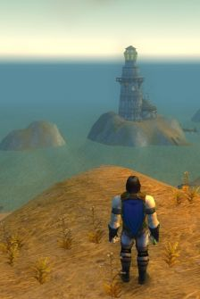
« ! // ! J?ai relu mes notes, et je crois avoir une théorie concernant ma ?téléportation? de Redridge à Westfall. Si ça se trouve, j?ai effectivement fait le voyage d?une région à l?autre, mais j?ai oublié d?inscrire ce ... Lire la suite >>>
Il faut bien se remettre dune journée comme celle dhier et rien ne vaut décumer les tavernes pour se récupérer Jolies servantes, bonne bière, lidéal à mon sens pour passer un excellent moment Surtout au moment où livresse prend le pas sur tout le reste que la seule ... Lire la suite >>>[Cyraneau] + Zacharias Waltefert +
Zacharias...[Jorian] Rencontre avec Trevor et départ de la Flamme Divine vers le Lordaeron
Le salopard... Le traitre...
Pauvre imbécile. Où trouve-tu la force de soutenir mon regard ?
Combien d' argent les espions des autoritées t' ont donné pour que tu risque bien plus que ta vie ?
Ce soir, les autoritées de la zone 73 n' auront pas leur rapp ... Lire la suite >>>
[Faizon] Où tout commence quand des abdominaux sauvent d'un bain de lave, et des conséquences de cet acte
« ! // ! J?ai fait une rencontre inquiétante, tout à l?heure. Un homme, un prêtre du nom de Trevor. Il disait connaître mon père. Il disait être un de mes amis d?enfance. Comment savoir ? Je n?ai aucun souvenir de mon père ou ... Lire la suite >>>

Bon une belle journée sannonce : gueule de bois et odeur de la fumée dune forge, sans compter une chaleur étouffante qui me fait me liquéfier Ouvrant les yeux, je découvre un océan de lave quelques mètres en dessous de moi, tandis quune barre de métal me défonce le dos ... Lire la suite >>>[Abyshal] Renouveau.
J'ai trouvé trace d'un Oncle, frère de Père Aloneth. Il se nomme Angrod.[Orosh] L'histoire d'Orosh; acte 1
Peut être m'en apprendra t'il plus pour retrouver Père et Mère ainsi que le reste de la famille.
Il ne saît rien...
Heureusement Kaldéa m'a retrouvé. Je l'ai mise en sécurité dans cette ville nau ... Lire la suite >>>
Acte 1 : Le réveil[Faizon] Où il est rencontré deux charmantes créatures, et un chevalier protecteur superflu
Je ne vois rien? Je ne suis rien? Une coquille vide dans un monde vide?
Puis la douleur vient? Et avec la douleur, l?existence de mon corps? La chaleur autour de moi? Des voix rauques que je ne comprends pas?
Je ne veux pas sortir de mon monde ... Lire la suite >>>
Bonne journée aujourdhui jai recroisé la séduisante Fleurdelys (si, si, 33 ans, mais 18 dans la tête, et un corps qui est la juste balance entre les deux âges ), avec laquelle je pense quil ne va pas falloir trop forcer pour avancer dun ou deux crans dans notre relation ... Lire la suite >>>[Cevi] Cambriolage
[i]Il devait être au alentour de 23h30, la lune avait presque atteint son zénith tandis que je me dirigeai vers le quartier marchand de Stormwind. J'avais revêtu mon armure de cuir, mon écharpe de soie noire, mon épée et un sac à dos contenant deux tiges de métal recourbées. ... Lire la suite >>>
Décade du Gorille [25]
[Faizon] Où il est raconté comment un paladin peut être tenace, et qu'un bon paladin est bien souvent plus mort que vif
Bon, javais pas prévu de raconter cela mais faut bien parler de trucs un peu marrant, quand même[Jorian] Déprime à Darkshire
Donc, alors que jétais de passage dans la cathédrale, suivant une jeune femme aux formes charmantes, et qui finit bien mieux que moi vis-à-vis de lendroit (pauvre démoniste ... Lire la suite >>>
« ! // ! Je suis à l?auberge du Corbeau Ecarlate. Dehors, c?est la forêt de Duskwood. La nuit éternelle. Ca me fait penser à l?intérieur de mon crâne?[Faizon] Où il est raconté que le manque d'alcool peut mener aux pires extrêmités, même à un âge qui est le mien; (ou) comment passer une soirée telle qu'on préférerait l'éviter
Je tombe de sommeil. A la lueur jaunâtre d?une bougie suintante de cire rouge ocre, je viens de feuilleter mon carnet bleu. ... Lire la suite >>>
Faizon quel idiot tu naurais quelle idée tu aurais dû ten douter Tout avait pourtant bien commencé en début de soirée Elle était là, toute mignonne, sur la place, les yeux lumineux, vêtue dune robe blanche et simple, à mattendre Quelques phrases bien tournées, su ... Lire la suite >>>[Faizon] Où il est réfléchi sur les règles de ce monde, et où, accessoirement, une bouffée de culpabilité intervient au mauvais moment
Jour 3 de la Décade du Gorille, en nuit cette fois, tardivement (du coup, cest plus le 4 au matin, en fait )[Braindille] Kalimdor
Bon Définitivement, cest pas ta semaine Faizon. Franchement, cest quand on voit ce genre de choses quon ne peut plus douter. Ce nest pas tant une question d ... Lire la suite >>>
Kalimdor, la nouvelle terre de la Horde.[Jorian] Petits bouts de papier...
Lorsque l'on as débarqué, mes fréres et moi, j'ai vu un paysage inédit :
La végétation y semblait absente, le sol avait la couleur du rouge et du jaune en passant par l'orange. Pas un seul nuage ... Lire la suite >>>
Ca commence par une étrange bourrasque.[Meeleloo] Journal de Meeleloo - 2
Mille petits morceaux de papiers, qui volent dans le vent? Tournoyant, virevoltant, vers le ciel? Et un homme. Debout, immobile, au milieu d?une plaine infinie. Le regard fou, perdu dans l?horizon. C?est de cet homme que viennent les ... Lire la suite >>>
Voilà, une page de ma vie s'est tournée. En bien ou en mal je l'ignore, mais tout a basculé hier pour différentes raisons. La première est que j'ai quitté Teldrassil pour la première fois depuis la mort d'Ethanlen. Et pour la première fois, j'ai accepté sa mort. Ce n'est pa ... Lire la suite >>>[Edelween] Puissance infinie, douleur sans borne
Meeleloo se faisait attendre.[Faizon] Où il semble que le sort ait choisi une cible de choix... mais quand ce n'est qu'une seule, ça fait beaucoup de boulot pour elle
Edelween se rendis à la loge des Druides, l'un d'eux semblait préoccupé.
Voulant lui venir en aide Edelween s'enquis de son souci.
Le druide voulait capturer un ours atteint d'une maladie ressemblant à la rage.
Heureuse de pouvoir l'aide ... Lire la suite >>>
Vous vous souvenez de cette histoire de dieux apparemment, je suis devenu une de leurs cibles privilégiées je ne croiserais pas autant Metellia sinon A peine sorti de mon doux coma éthylique de la journée, sur les coups de 22 heures, et débarrassé des deux rats qui commen ... Lire la suite >>>[Khinan] Chapitre I -- Nouveau départ
Ère du Renouveau, Lune de la Force, Décade du Gorille, 6ème jour[Jorian] Avertissement d'Aërwen
Dieu que j'ai mal ! Je ne supporte plus cette douleur ! Cette taverne... J'y passe mes journées et mes nuits... Ai-je encore quelque chose à faire ... Lire la suite >>>
[i]« Jorian, puis-je parler à vous une seconde dans le privé ?[Agon] Novice
- Bien sûr, Dame Aërwen? »
- Jorian, que vous trouviez des amis pour vous aider dans votre cherche pour Carol, cela est bien. Mais vous devez malgré cela restez dans le méfiance toujours.
- La méfiance ?... Je ... Lire la suite >>>
-Druide... Enfin, je vais devenir un véritable druide.[Khinan] Chapitre I -- Vers le Northshire
Quelle fierté lorsqu'il avait enfilé pour la première fois la robe des novices...
[justify]Agon avait été accepté parmi l'ordre tauren des druides et avait co ... Lire la suite >>>

Ère du Renouveau, Lune de la Force, Décade du Gorille, 7ème jour[Faizon] Où il est raconté comment l'alcool aide à ne cible que les questions importantes, et les réponses apportées à ces questions
Je fais des progrès, je n'ai rien bu hier soir. Pourtant ce n'est pas l'envie qui m'a manqué. J'ai réfléchi à beaucoup de choses. Oui je veux reprendre ma ... Lire la suite >>>
Décidemment, jai limpression que les jours passent à une vitesse lorsque je suis imbibé comme il se doit deux jours de coma, une journée à récolter des fonds, cest un bon rythme ça ![Meeleloo] Journal de Meeleloo -3
Même si rester murgé (et non murloqué, même si cela pourrait savérer amusant) méviter ... Lire la suite >>>
Mes rêves ont une nouvelles fois été épouvantables. J?étais un ours, puissant et sauvage, libre de toute entrave, mais incapable de choisir ma route, vivant au jour le jour, sans aucun autre but que vivre. Une part de moi comprend le bonheur d?une telle situation. Libérée de ... Lire la suite >>>[Edelween] Meeleloo, un amour de druide
Meeleloo n?était pas là, je l?ai attendue sur le ponton pendant plus d?une heure mais je n?ai pas senti sa présence[Orosh] L'histoire d'Orosh; acte 3
Elle me manque, depuis mon arrivée ici il n?y a qu?avec elle que je ressens un lien avec la magie, fugace souvenir d?un don.
Je suis aller au Nord ... Lire la suite >>>
Acte 3: Le savoir[Khinan] Chapitre II -- Faire ses preuves
Je suis resté quelques temps à suivre les ordres de mes
supérieurs sans même y réfléchir...
On me demandait de tuer des humains, je tuais des humains.
La forêt des pins argentés en était pleine, ça tombait bien.
C'est là que j'ai commencé à manger ... Lire la suite >>>
Ère du Renouveau, Lune de la Force, Décade du Gorille, 8ème jour[Khinan] Chapitre II -- Souvenirs...
Lair est plus sain ce matin Ou peut-être est-ce mon corps qui lest Je me suis levé à laube. Le Goldshire sest bien vite réveillé, comme à son habitude. Selthinea va ouvrir sa boutique dans peu ... Lire la suite >>>
Ère du Renouveau, Lune de la Force, Décade du Gorille, 9ème jour[Lae] Acte I
Je nai pas dormi ! Jai eu si froid que jai dû tuer un ours et me servir de sa fourrure comme couverture. Un malandrin est passé par là et a voulu me piquer la dépouille ! Soit disant ... Lire la suite >>>
Le minuscule être noir, entouré comme à l'habitude d'une aura verte, se tenait devant le gigantesque démon qui venait de le convoquer. Opinant du chef nerveusement à chaque phrase de son interlocuteur, sautillant d'un pied sur l'autre rapidement sans arriver à cacher son imp ... Lire la suite >>>[Khinan] Chapitre II -- La fuite vers East Vale
Ère du Renouveau, Lune de la Force, Décade du Gorille, 10ème jour[Faizon] Où une renconter amène un doute certain, que même l'alcool peine à dissiper
Je me suis tellement plongé dans mes souvenirs la nuit dernière que je ne me suis pas rendu compte que le jour s'est levé. Je suis arrivé au lac, et l'ai traversé... « Ces terres nous appartiennent, ... Lire la suite >>>
Une chose qui est bien avec cet endroit, cest que cest au moi aussi le bordel que par chez moi, mais en pire. En bref, il ny a pas de quoi sennuyer. Outre la bande des Defias qui semble pulluler comme des champignons vénéneux, le gouvernement est corrompu jusquà los.
... Lire la suite >>>
Décade de l'Ours [24]
[Meeleloo] Journal de Meeleloo - 4
J'ai merveilleusement bien dormi cette nuit, bercée par les battements du c?ur d'Edelween, et par la houle. Elle s'est levée avant moi, me laissant terminer mon voyage au pays des songes. Lorsque je l'ai retrouvée, elle avait une surprise pour moi. Une surprise un peu spécia ... Lire la suite >>>[Khinan] Chapitre III -- Retour vers le futur !
Ère du Renouveau, Lune de la Force, Décade de lours, 2ème jour[Syldur] Les Fils de Quel'Thalas
23hO4 : « Raaaaaaah je te tiens enfin espèce de murloc à barbe !!
-Tudjuuu, lâche-moi tête de pioche ! Ten as pas marre de me courser depuis trente ans !?
-Depuis trente ans... Bref ! Si, j ... Lire la suite >>>
[Jorian] Arrivée au Manoir de Ravenholdt
Les Fils de Quel'Thalas
C'était une époque sombre pour les sujets de Quel'Thalas...
Cinq ans sétaient maintenant écoulés depuis la chute de Silvermoon. Les survivants Hau ... Lire la suite >>>
[Meeleloo] Journal de Meeleloo - 5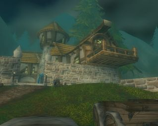« ! // ! Si j?en crois mes notes, j?ai erré dans les montagnes durant deux jours et deux nuits. Mais ça y est, je l?ai enfin trouvé. Ravenholdt? Le repaire de la guilde des Assassins.
A voir les gardes à l?entrée, et leur a ... Lire la suite >>>
"Papa, papa, regarde, j'ai trouvé une belle branche pour faire un arc.[Khinan] Chapitre III -- Repos dans le Loch Modan
- Ou l'as tu prise ? Me demande mon père, tendu.
- Là bas, sur le vieux noisetier. Répond-je avec franchise.
- Ma fille, vient me voir, approche, fait mon père sérieux. Ce que tu as fais est mal. Cet a ... Lire la suite >>>
Ère du Renouveau, Lune de la Force, Décade de lOurs, 4ème jour[Jorian] Système de rubans noués aux dagues. La guilde des Assassins.
Je me réveille à peine, et à en croire laubergiste de la taverne de la Fortebière, cela fait plus dune journée que je dors. La journée davant-hier a été très éprouvante pour moi. Jai bu, et beauco ... Lire la suite >>>
« ! // ! Il semble que j?ai trouvé un bon système pour me souvenir constamment de mes objectifs à court terme : j?enroule un petit ruban autour de ma dague. Autour de ma lame est maintenant inscrit « FAIS LES POCHES DES MEMBRES DU SYNDICAT », et en relisant ... Lire la suite >>>[Khinan] Chapitre III -- Un long voyage, première partie
Ère du Renouveau, Lune de la Force, Décade de l'Ours, 5ème jour[Jorian] Rencontre avec Reibereth Marcherêve et Murgond Barbefeu
[i]"Où en est-elle ?
-Un grand changement va bientôt subvenir.
-Aaah... Alors il est temps. Pour l'instant, tout se déroule tel que je l'avais prévu.
-Oui seigneur. Nous continuerons de la surveille ... Lire la suite >>>
[Orosh] L'histoire d'Orosh, acte 4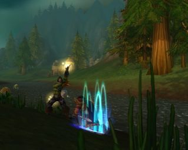
« ! // ! Je viens de faire une très touchante rencontre? Un paladin, portant le nom de Reibereth Marcherêve. Il semble que nous nous soyons connu, mais je n?en suis pas sûr. Il m?a donné sa bénédiction, et confié aux soins ... Lire la suite >>>
Acte 4: Vertige[Jorian] Départ de Jorian et Aërwen vers Stranglethorne
J'ai contribué quelques temps à l'effort de guerre réprouvé...
Plus comme un monstre sans âme mais comme un citoyen déterminé à protéger
son peuple.
Et c'est pendant cette période que j'ai rencontré quelques uns de mes frères
avec qui j'ai sympathisé.. ... Lire la suite >>>
[Meeleloo] Journal de Meeleloo - 6« ! // ! Je discute en ce moment avec Dame Aërwen. Elle me révèle enfin des choses importantes sur mon accident, et sur ce qui a pu arriver à Carol. Je note au fur et à mesure.
Nous sommes dans la vallée de Stranglethorn. ... Lire la suite >>>

Comme je le lui avais demandé, Edelween m'a réveillée en venant me rejoindre à l'auberge. Je la prends dans mes bras pour lui transmettre la chaleur de mon corps. Elle est épuisée et glacée, et s'endors rapidement dans mes bras, mais je sais que demain matin, elle ne sera pl ... Lire la suite >>>[Orosh] L'histoire d'Orosh; acte 5
Acte 5: La horde[Orosh] L'histoire d'Orosh; acte 6
Je me réveille sur le pont de la tour des zeppelins d'Orgrimmar...
On m'y a sûrement traîné parce que je gênais le passage...
Autour de moi, une bonne trentaine de membres de la horde attendent leur
zeppelin.
A voir leurs carrures et leurs équipem ... Lire la suite >>>
Acte 6: Tranche colline et Grésyl[Agon] Fabulette
Après m'être renseigné auprès d'un garde, je me suis mis en route pour le
sud, vers Tranche colline.
Mais à peine sorti de la ville, j'ai ressenti un mal étrange dans les
environs...
En me laissant guider vers ce mal, je suis repass ... Lire la suite >>>
[Makhata] Hanblecheyapi - la Quête de la Vision
Le lion et les moucherons
Un fier guerrier, vêtu d'une magnifique armure, chevauchant sa belle monture,
Aperçoit, à la Croisée de chemins, une dizaine de gueux.
C'est la gloire qui l'attend en ce valeureux ... Lire la suite >>>

[justify]Un jour après le rituel de Heya Hee, les pluies avaient cessées, nous permettant de préparer notre départ pour le camp d'hiver. L'atmosphère au sein de la Tribu était redevenue joyeuse, l'effervescence régnant alors que la date du départ se rapprochait. Chaque famil ... Lire la suite >>>[Larmelune] Une nuit Inoubliable
Elle était assise comme souvent dans la vieille auberge, les jambes allongés sur un coin de table, sirotant une bière à sa facon si singulière avec un ustensille bizare qu'elle aimait a nommer "paille". Ca faisait peut etre une semaine qu'elle avait "fugué", se retrouvant se ... Lire la suite >>>[Khinan] Chapitre III -- Un long voyage, deuxième partie
Ère du Renouveau, Lune de la Force, Décade de l'Ours, 8ème jour[Eskilan] Une nouvelle vie commence.
"Emmène-moi où ces vagues lumières scintillent et prennent tout leur sens
Par les chemins bercés de chants, bercés de souffles en tous sens
Au delà de cette souffrante terre, et de cette rageuse eau ... Lire la suite >>>
Voila quelques temps que je me suis installé au Goldshire. J'adore ce village! Encore discret je me contente de travailler auprès de mes maitres de forge et de combat. Il ya peu, je viens de réussir à forger ma première épée. Quel honneur de pouvoir m'entrainer avec! Mon mai ... Lire la suite >>>[Meeleloo] Journal de Meeleloo - 7
Je me suis levée tôt et de bonne humeur aujourd'hui. Edelween dort encore, je la laisse se reposer. Je pars vers la ferme Alexton pour retrouver la boussole de l'architecte de Stormwind. Cet objet est pour lui un souvenir précieux. Je me demande pourquoi me confier à moi une ... Lire la suite >>>[Khinan] Chapitre III -- Un long voyage, troisième partie
Ère du Renouveau, Lune de la Force, Décade de l'Ours, 9ème jour[Lethiel] Premier jour depuis l'Eveil...
"Quand est-ce que ça doit arriver ? Ma patience atteint ses limites...
-Demain au plus tard, seigneur.
-Il vaut mieux... Pour lui..."
Le soleil est déjà haut dans le ciel. Il vient réchauffer le b ... Lire la suite >>>
Voici donc le premier jour que je reprends l'écriture de ce journal depuis que Shando Stormrage a éveillé les druides. Depuis la défaite de la Légion Ardente, depuis que j'ai tout perdu...
Pourquoi l'avoir reprise ? Je l'ignore. Peut-être est-ce l'envie de coucher mes tou ... Lire la suite >>>
Lune d'Agilité [74]
Décade du Tigre [26]
[Lethiel] Deuxième jour depuis l'Eveil...
Jai croisé un groupe dhumains dans les rues de Darnassus aujourdhui. Il y a longtemps que je nen avais vu. Et, bien que nos alliés, ils demeurent pour moi, ainsi que les nains et les gnomes, des gens curieux et excentriques. Des gens auxquels je naime pas me mêler.[Meeleloo] Journal de Meeleloo - 9
Mal ... Lire la suite >>>
J'ai retrouvé Edelween le lendemain. Elle était avec des membres de la guilde, Feandil et Doram, accompagné de son familier, Sakapus. Ils m'ont rejoint à Astranaar où je les attendais avec un bon repas. L'ambiance était détendue et amicale et nous avons discuté en mangeant. ... Lire la suite >>>[Edelween] La paix avance
Ashenval,[Orosh] L'histoire d'Orosh; acte 7
« Les Fulborg sont malades Edelween, il y a longtemps un druide à créer une baguette permettant de prendre leurs apparences, retrouvez cette baguette, réunissez les trois morceaux et aller voir les Fulborgs, certain d?entre eux sont encore sains, voyez s?ils ne ... Lire la suite >>>
Acte 7: Les barrens[Braindille] Orgrimmar
"Il fait très sombre... Je ne distingue pas nettement ce qui m'entoure...
Une clameur assourdissante s'élève au loin et l'armée se met en branle
immédiatement.
Nous courrons vers l'ennemi... Au loin, la fumée se dissipe...
Des humains en armure ... Lire la suite >>>
Mon frère a participés a sa construction, moi, j'étais trop jeune a cette époque :[Jorian] Un cheval nommé "Souvenir"
- C'quoi s'tit bras là ? tu crois faire quoi avec ?
- Haha... a peine s'il porte une planche !
- Ouais, va chasser les scorpions !
Voici ce qu'as étais la réaction des "cerfs de sentiers" ... Lire la suite >>>
« / !! / Je suis Jorian l?Oubli, je souffre d?amnésie chronique. J?ai relu toutes mes notes et une chose semble claire?[Lethiel] Troisième jour depuis l'Eveil...
Je guéris.
C?est à peine perceptible au long des pages, mais ça ne fait malgré tout aucun doute. Le fil de ma mémoire s?épai ... Lire la suite >>>
Jai décidé de partir pour Stormwind car lon ma apprit quil y a là un maître darmes capable de men apprendre davantage sur le maniement de lépée.Mariage entre Tharkal et Tendresse
Le voyage à dos dhippogryphe ma ramené dans les forêts dAshenvale. Des forêts emplies de souvenirs
Jai décidé de n ... Lire la suite >>>
De part les heures troublées de nos contrées tant aimées, il est des évènements qui ne sont pas assimilés au sang et à la damnation de l'esprit...
C'est au 4ème jour de la Décade du Tigre ( Lune d'Agilité ) de l'Ère du Renouveau, qu'un mariage fut célébré... Des bribes de souvenirs sont visibles sur les registres de la guilde Ombre et Lumière (http://ombre.et.lumiere.free.fr/index.php?page=gallerie&affich=1), témoignant du mariage entre Tharkal le Maître d'Ombre de cette guilde, et Tendresse, paladine de la guilde Lumière Céleste...
Un instant de bonheur, permettant de se rappeler pourquoi nous vivons, en dehors des guerres et des tueries... Pour préserver ces instants magiques qui remplissent nos coeurs de joie et de désir de vivre...
[Jorian] Korial l'Historien
C'est au 4ème jour de la Décade du Tigre ( Lune d'Agilité ) de l'Ère du Renouveau, qu'un mariage fut célébré... Des bribes de souvenirs sont visibles sur les registres de la guilde Ombre et Lumière (http://ombre.et.lumiere.free.fr/index.php?page=gallerie&affich=1), témoignant du mariage entre Tharkal le Maître d'Ombre de cette guilde, et Tendresse, paladine de la guilde Lumière Céleste...
Un instant de bonheur, permettant de se rappeler pourquoi nous vivons, en dehors des guerres et des tueries... Pour préserver ces instants magiques qui remplissent nos coeurs de joie et de désir de vivre...
« ! // ! Je viens de croiser un historien du nom de Korial. Historien? Le passé me fascine. » ... Lire la suite >>>La Cérémonie du Cerf
[Evénement guilde]
Grande cérémonie du Cerf en présence du Clan Deerantlers et des Initiés du Néant. Cette cérémonie shamanistique se déroule au coeur d'Ashenvale, où l'Honneur se vit célébrer au travers de trois grands rituels.
Le rituel de l'Esprit, le rituel de la Force, et le rituel de la Nature.
[Lethiel] Quatrième jour depuis l'Eveil...
Grande cérémonie du Cerf en présence du Clan Deerantlers et des Initiés du Néant. Cette cérémonie shamanistique se déroule au coeur d'Ashenvale, où l'Honneur se vit célébrer au travers de trois grands rituels.
Le rituel de l'Esprit, le rituel de la Force, et le rituel de la Nature.
Je ne comprends pas quel plaisir les nains peuvent avoir de vivre dans des montagnes si froides.[Darzag] La cérémonie du cerf
Ironforge est sans conteste une ville impressionnante. Elle mêle la roche et la technologie des gnomes et est puissamment protégée.
Je pense demeurer un moment. La neige et le ... Lire la suite >>>
En cette douce soirée, la forêt d'Ashenvale ne fut plus aux elfes. Un parfum tout autre virevolta autour des arbres, les oiseaux professant la naissance d'un nouveau clan.[Meeleloo] Journal de Meeleloo - 10
En cette longue soirée, de grands feu ont été allumés, les animaux sauvages calmé et troll , tauren, ... Lire la suite >>>
Aujourd'hui nous avons prévu d'aller explorer les profondeurs de Gnomeragan, l'ancienne[Edelween] Maladie
cité gnome. Nous avons créés une équipe composée de Sylvelune, Kymeim, Telerin, Edelween bien sur, et moi. Que dire de cette expédition ? Pas grand chose en fait. Les profondeurs de la v ... Lire la suite >>>
Edelween se sentait étrange, tout lui apparaissait à travers un brouillard flou, ancien souvenir des périodes de maladie de son enfance.[Jorian] Rencontre avec Fulzym la crapule
Avait-elle trop forcé dans la forteresse gnome ? Les radiations avaient-elles réveillées la faiblesse dormant en elle ?
Pourtant T ... Lire la suite >>>
[Lethiel] Cinquième jour depuis l'Eveil...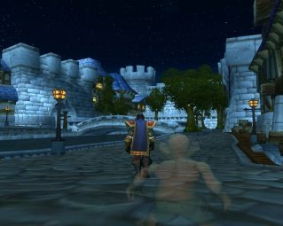
« ! // ! Un mendiant gnome vient d?essayer de me faire les poches ! J?ai rarement vu une créature aussi laide? Mais la petite fouine ne manquait pas d?habileté. Enfin, ma main s?est refermée sur son poignet avant même qu?il n ... Lire la suite >>>
Cinquième jour depuis l'Eveil...[La souris] C'est beau une ville la nuit, normalement !!
Fenrir, car c'est comme cela qu'il s'appelle, n'appréciant pas la ville naine, nous n'y sommes pas demeuré plus longtemps et c'est contraint qu'il a emprunté le "métro" afin que nous nous rendions à Stormwind. Je dois dire que je partageai ... Lire la suite >>>
[La souris] C'est beau une ville la nuit (episode 2)
C'est beau une ville la nuit... La premiere fois...
[i]"spluuurch"
C'est l'premier bruit, la premiere sensation qu'j'ai eu la chance d'connaitre en entrant dans Stormwind.
- %@^# de canasson d'mes deux !!!!
Et voila ! Mes belles bottes toutes neuves !!!
C'pas ... Lire la suite >>>
Plus ou moins séchée, elle traversa le pont qui la mena dans des rues proprettes devant la cathédrale.[La souris] C'est beau une ville la nuit (episode 3)
Quelques gardes, comme toujours, quelques prêtres...
Lui revinrent en mémoire quelques effluves d'un passé pas si lointain. Des sermonages en tirages d'oreilles, quelques ... Lire la suite >>>
Par tous les fantômes d'Lordearon !!! Ces nains sont plus bruyants que tous les démons des abysses...[/i]L'ordre de Magni Bronzebeard
La jeune femme tenta bien de mettre ses mains sur ses oreilles, tentative pour atténuer le martèlement des marteaux, les claquements du fer chaud, les soufflets tonit ... Lire la suite >>>
[Evénement guilde]
Le Roi Nain Magni Bronzebeard de la cité d'Ironforge ordonne au jeune Murgond Barbefeu de rassembler l'armée Naine, disloquée dans Khaz Modan depuis la fin de la Troisième Guerre.
Une alliance de guildes en vue de protéger l'ancienne cité d'un éventuel retour de la Légion Ardente, de rester vigilant face à la Horde, et de ne pas se laisser étouffer par les autres races de l'Alliance.
Les membres de cette grande armée, ou fraternité Naine, seront connus sous le nom de "Veilleurs de Dun Morogh".
[Chiron] L'auberge du Maelstrom
Le Roi Nain Magni Bronzebeard de la cité d'Ironforge ordonne au jeune Murgond Barbefeu de rassembler l'armée Naine, disloquée dans Khaz Modan depuis la fin de la Troisième Guerre.
Une alliance de guildes en vue de protéger l'ancienne cité d'un éventuel retour de la Légion Ardente, de rester vigilant face à la Horde, et de ne pas se laisser étouffer par les autres races de l'Alliance.
Les membres de cette grande armée, ou fraternité Naine, seront connus sous le nom de "Veilleurs de Dun Morogh".
La soirée battait son plein a l'auberge du Maelstrom....[Jorian] Embuscade
... les convives, souriants, dissertaient, buvaient et riaient, fêtant probablement quelque heureux événement survenu la veille. La diversité des gens présents transformait l'ambiance normallement calme et discrèt ... Lire la suite >>>
Extraits des notes de Jorian :[Noireau] L'Esprit du Troupeau
« ! // ! J?ai reçu une missive, un rendez-vous de Fulzym? Fulzym ?
J?ai relu mes notes, je me demande ce que cette canaille peut bien me vouloir. Il me donne rendez-vous dans un coin désert, dans le quartier commercial de Stormwind. ... Lire la suite >>>
Le Tauren Noireau, fils aîné du chaman Aiglefin, a vu sa vie terrienne bouleversée par un message onirique lui commandant de retrouver ses frères Taurens habités par le puissant Esprit du Troupeau. Lentité qui lui parlait, lEsprit du Troupeau lui-même semble-t-il, résidait ... Lire la suite >>>[Jorian] "Khérin", l'apprenti
« ! // ! Cela faisait longtemps que je n?avais pas relu mes notes. L?impression qu?elles me laissent est étrange? Il y a de l?espoir, il semble que je commence à guérir, à de moins en moins oublier? Et il y a du danger. Il semble qu?on m?ait abusé. Une ... Lire la suite >>>[Meeleloo] Journal de Meeleloo - 11
Je me suis levée avec l'idée de purifier Duskwood. Il est plus que temps que j'?uvre pour le bien de cette forêt qui pourrait être si belle. Je suis donc partie en chasse. J'ai commencé une mise en jambe par quelques worgens, histoire de récupérer un peu de cuir pour ... Lire la suite >>>
Décade du Singe [21]
[Jorian] Joueur de cartes
Dans le silence velouté de la nuit, la majorité du bon peuple d?Azeroth dort.[Schloum] Retour a la vie
Certains d?entre eux se battent, guerroient par delà-le monde.
D?autres suivent fiévreux les enchères de la bourse dans les entrailles d?Ironforge.
Et un homme, assis en tailleur sur son lit, le ... Lire la suite >>>
Il fait noir...Tres noir, j'entends des bruits...Je vois un long tunnel de lumiere,et derriere moi,le noir. Je sens des decharges electrique sur mon corps,que se passe t'il? Mes yeux s'ouvre faiblement j'entend quelqu'un parler[Mauldred] La Sauvegarde du Traité
-Inconnu: Il est en vie!
-Inconnu2 :Je vois ... Lire la suite >>>
Comme vous le savez, nous autres mercenaires, nous nous battons d'abord pour les causes qui payent avant de vérifier leur légitimité... Cette fois je pense que ces deux conditions étaient réunies.[Gaark] Premiere Bataille
Le traité de non-agression signé par Dame Jaina avec Thrall le faible est fra ... Lire la suite >>>
Cest en début de soirée que je fus réveillé à grand fracas. Au dehors résonnaient les bruits dalarmes Je sortais alors précipitamment de lauberge de Ratchet ou javais fait escale pour différentes affaires. Les esprits du vent mapportèrent alors de sombres nouvelles. Le ... Lire la suite >>>Le sursaut de la Légion Ardente
[Mise à jour 1.3]
Azuregos, le Dragon Bleu sort de sa tannière en Azshara, et massacre les aventuriers qui ont le malheur de l'approcher.
Cependant, le Lord Kazaak, sinistre représentant de la Légion Ardente, parvient à se frayer un passage dans le monde d'Azeroth. Il erre depuis dans les Terres Foudroyées (Blasted Lands), conspirant contre la Horde et l'Alliance.
[Jorian] Une pensée pour Aërwen
Azuregos, le Dragon Bleu sort de sa tannière en Azshara, et massacre les aventuriers qui ont le malheur de l'approcher.
Cependant, le Lord Kazaak, sinistre représentant de la Légion Ardente, parvient à se frayer un passage dans le monde d'Azeroth. Il erre depuis dans les Terres Foudroyées (Blasted Lands), conspirant contre la Horde et l'Alliance.
« ! // ! Dame Aërwen? Ce nom flotte encore à la lisière de mon esprit, imperturbable. J?ai relu mes notes, mais cela fait longtemps qu?elle n?y apparaît pas. J?espère qu?elle n?a pas eu d?ennui avec les Buccaneers, qu?elle m?a dit avoir infiltré, dans un vieux carnet. » ... Lire la suite >>>[Schloum] Souvnenir de Gnomeragan
Je me reveilla,un nain viens s'asseoir sur un tabouret pret de moi,et me dit :[Jorian] Les quatre "D"
Je m'appelle Gloïnir petit gnome,et toi?Mais d'abord comment te sens tu?
-Je m'appelle Schloum,et je vais plutot bien,je me souviens...de Gnomeragan.
Gloïrnir me demande : Ahoui? et quelle souv ... Lire la suite >>>
« ! // ! Je viens de revoir Khérin, mon apprenti. Je ne me l?imaginais pas aussi laid, même en lisant mes notes ! Quoiqu?il en soit il revenait d?une mission que je lui avais confié, et il s?en est admirablement tiré. Il s?est aussi occupé de Souvenir (mon cheval ... Lire la suite >>>[Jorian] Rendez-vous avec Djezebel
[Chiron] Une Nouvelle Aube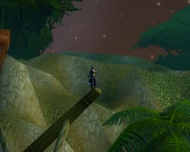
« ! // ! Je suis arrivé à Booty Bay, comme mes notes m?indiquaient de le faire. Un peu en avance sur l?heure du rendez-vous? Plus qu?à attendre. Je me demande ce que ce fameux « D » aura à me dire. » ... Lire la suite >>>
En cette fin d'après midi lumineuse, Stormwind était en proie a un fourmillement et a une animation typiques d'une grande ville humaine. Les éclats de voix venant du Quartier des Commerçants se répercutaient sur les pavés de la ville et rompaient avec la quiétude habituelle ... Lire la suite >>>[Jorian] Première partie de la thérapie de "D"
[Schloum] arrivée aux frigères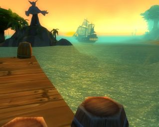
Booty Bay. Son port qui sent le poisson, et ses plages qui puent la mort.
Sur le ponton où accostent régulièrement les vaisseaux en provenance de la terrible Kalimdor, derrière quelques caisses, deux humains discutent. Un ... Lire la suite >>>
Je suis parvenu aux frigères après un long voyage.Je me rappel de ce que le nain Glïrnir m'avait dit: ais attention sur la route,elles ne sont pas sur et prend cette dague pour te proteger...[Lethiel] Septième jour depuis l'Eveil...
Et me voila ici pour en apprendre plus sur mon passé,sur ma femme et sur mon ... Lire la suite >>>
Bien que la Légion Ardente ait été repoussée, des lambeaux de ses serviteurs demeurent au cur même dAshenvale. Ceux que lon nomme Réprouvés et qui se disent libérés de leurs anciens maîtres.[Meeleloo] Journal de Meeleloo - 12
Nous les avons vu, dinfâmes morts-vivants fouiller les ruines à la recherche d ... Lire la suite >>>
Aujourd'hui ça ne va pas très fort. La tristesse d'hier est toujours présente. Pourtant, je trouve au courrier un cadeau d'Edelween qui me réchauffe le c?ur, et me met un peu de baume à l'âme. Elle est occupée pour l'instant, aussi je m'active un peu dans mon coin, toujours ... Lire la suite >>>[Jorian] Des informations sur Carol
« ! // ! Ai erré un moment dans la jungle de Stranglethorne. Cette verdure étouffante, l?incessant piaillement des milliers de bêtes, dans les arbres, sous la terre, j?ai cru devenir fou? Mon avant-bras me démangeait, j?ai regardé, il s?y trouve une étrange cicatrice. Un D b ... Lire la suite >>>[Braindille] Fin de la puberté
Cela faisait bientôt 3 semaine que je suivais un entraînement a la chasse, 3 semaine que mon esprit se transformer, apprenant petit a petit a penser comme un prédateur, 3 semaine que l'on avait graver dans ma mémoire une idées, un rêve, un but, celui de servir la Horde, et ... Lire la suite >>>Création d'un Ordre Hospitalier
[Evénement guilde]
Pour venir en aide aux invalides et aux blessés, le Docteur Gwendolline et le Docteur Elissande fondent l'Ordre des Hospitaliers.
Une convention médicale est soigneusement rédigée, et le nouvel Ordre fonde ses quartiers dans la ville de Stormwind.
[Meeleloo] Journal de Meeleloo - 13
Pour venir en aide aux invalides et aux blessés, le Docteur Gwendolline et le Docteur Elissande fondent l'Ordre des Hospitaliers.
Une convention médicale est soigneusement rédigée, et le nouvel Ordre fonde ses quartiers dans la ville de Stormwind.
Aujourd'hui, j'ai décidé de me lancer à la recherche de Velinde pour voir ce qu'elle est devenue et trouver une explication sur les worgens. Mon enquête me mènera sur les deux continents. Cette sentinelle à beaucoup voyagé. Je finirai par retrouver tristement sa trace dans l ... Lire la suite >>>[Sheeana] Les chroniques Silverwind...Prologue 1
Il fait noir...
Au loin, je vois une lumière blanche qui m'attire. J'avance en direction de cette lumière apaisante. Je ne suis plus qu'a quelques pas quand je m'aperçois que cette lumière est émise par un alter ego négatif.
Une voix s'élève dans ma tête.
"Bonjour m ... Lire la suite >>>
Décade du Faucon [27]
Joute à Goldshire
[Evénement tournoi]
Les Paladins du Northshire lancent une petite joute amicale dans les forêts d'Elwyn. Le serviteur de la Lumière Hencalad, le guerrier Lenarka et le démoniste Crepusculez s'y font remarquer.
[Jorian] Rencontre avec Vladam le Vagabond
Les Paladins du Northshire lancent une petite joute amicale dans les forêts d'Elwyn. Le serviteur de la Lumière Hencalad, le guerrier Lenarka et le démoniste Crepusculez s'y font remarquer.
« ! // ! Je me nomme Jorian, j?ai une cicatrice en forme de D barré à l?avant-bras droit, et je n?ai aucun souvenir. J?avais des notes, je crois. Je n?ai plus rien. Plus qu?une lettre reçue à l?instant. Un rendez-vous au sud de Duskwood. Suis dans la forêt. Il ... Lire la suite >>>[Jorian] Récupération des Carnets
« ! // ! Un perroquet m?a apporté une missive. La signature est identique à la cicatrice sur mon bras ! Mes notes? Mes carnets sont à l?Abbaye de Northshire. Le temps de nouer un ruban à ma dague, et je me met en route. Il faut que je sache. ... Lire la suite >>>[Braindille] Réunion secréte
- Une réunion ?[Jorian] Le retour de "D"
Nous étions quatre, a Orgrimmar, le maître de notre guilde, le sage Gorgal, Cryoban, notre trolle prophéte, Vood, un orc chasseur comme moi, et enfin, moi.
- Oui, je ne sais pas encore de quoi il s'agit exactement, un dénommés Fehzul a demander a toutes le ... Lire la suite >>>
« ! // ! Plus que cinq encoches à ma dague, et j?aurais neutralisé suffisamment de ces pirates bloodsail pour réclamer la récompense. L?air marin est vivifiant ! Ah, j?aperçois l?une de ces canailles, qui s?éloigne un peu trop de son camp. Allons lui montrer la Lumière? »[Duvnarel] Pensées de Duvnarel - 1
... Lire la suite >>>
J'appréhendais un tant soit peu de rencontrer mes pairs. Je n'appartiens pas à ce temps, pas plus que je n'appartiens au passé. Coupée de toutes mes racines, comme la page d'un livre effacée et détrempée suite à un trop long séjour dans l'eau, je tente vainement de me recons ... Lire la suite >>>[Lethiel] Huitième jour depuis l'Eveil...
Nous sommes resté un moment dans une ville du nom de Darkshire afin de venir en aide à la milice locale. Apparemment, les bois alentours sont infestés de morts-vivants.[Jorian] Troisième partie de la thérapie de "D"
Nous avons même rencontré une abomination et avons aidé à sa destruction.
La présence dune pareille cré ... Lire la suite >>>
La Thérapie de « D », Troisième partie :[Jorian] Un étrange rêve...
« Asseyez vous », exige la jeune femme.
(cliquez sur les images pour lire les dialogue et poursuivre le récit)
Les vagues le doux bruit des vagues infin ... Lire la suite >>>
[Makhata] Le Grand Conseil
« ! // ! Je suis sur un lit de paille, dans une auberge miteuse. Je viens de me réveiller. J?ai fait un rêve. Il y avait un Seigneur Elfe je crois, et un oiseau? Sauf que je ne sais PAS si c?était un rêve !
Peut-être ... Lire la suite >>>

[justify][Meeleloo] Journal de Meeleloo - 14
La saison du renouveau était arrivée bien tôt cette année, l?air semblait plus frais, plus neuf, charriant les senteurs des bourgeons gorgés de sève. Une saison s?était déjà écoulée depuis mon rituel d?hanbleycheyapi. L?hiver avait été clément et nous n?avions pas ... Lire la suite >>>
Aujourd'hui j'ai pas mal traînée. Le raid d'hier m'a laissée sur les rotules, j'ai donc profité de ma journée pour me reposer un peu. J'ai néanmoins rejoint Edelween dans la soirée. Elle était à Southshore, dans un état épouvantable. Couverte de sang et de chaire, dans un ét ... Lire la suite >>>[Lethiel] Neuvième jour depuis l'Eveil...
Ce jour jai retrouvé un vieil ami que je navais plus vu depuis quatre ans.[Jorian] Rencontre avec Esther
Xaod sétait retiré dans un monastère juste après la bataille du Mont Hyjal.
Nous lavons rencontré durant la guerre, Adalanë et moi, et ce paladin a très vite réussi à se lier damitié avec nous. ... Lire la suite >>>
Une dispute vient d?éclater sur le parvis de la Cathédrale, à Stormwind.[Meeleloo] Journal de Meeleloo (raconté) - 15
Rien de violent. Une simple altercation. Mais les deux femmes impliquées attirent l?attention de Jorian, qui se dissimule derrière un arbre afin d?écouter la conversation.
La première des femmes s ... Lire la suite >>>
La première pensée de Meeleloo ce matin là, était qu'il fallait qu'elle s'occupe. C'était pour elle un besoin impératif et vital. Elle sentait la solitude comme jamais, ou plus exactement, elle se sentait seule et isolée. Même si ils n'étaient pas toujours à ses cotés, savoi ... Lire la suite >>>[Jorian] Rencontre avec Lethiel
« Bien, je vais t?apprendre quelque chose de très important, aujourd?hui, Khérin : Les Quatre « D ».[Jorian] Les résultats d'Igaria
Le gnome soupire?
- Vous m?avez déjà appris cela, Maître Jorian.
- Heu? ah oui, hem, bien. Je voulais vérifier si tu t?en rappelais bien. Tu n?es pas tombé dans le piège, ... Lire la suite >>>
Jorian et le gnome se faisant appeler « Khérin » se dirigent vers le centre-ville, lorsqu?une femme interpelle le Maître Voleur. Le duo se retourne, pour découvrir une femme blonde, et pâle, vêtue d?une longue robe verte.[Meeleloo] Journal de Meeleloo - 16
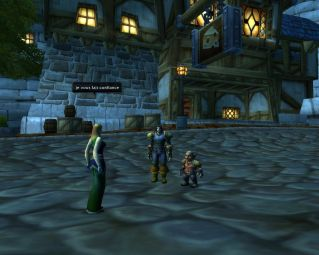
... Lire la suite >>>
Aujourd'hui était un jour important, le jour de mon entretien avec Messire Sdol. Le jour où ma vie allait peut être basculer. Le jour de toutes mes angoisses. Messire Sdol attendait dans le quartier nain de Stormwind. Il m'a déjà fallut du temps pour trouver le bâtiment dans ... Lire la suite >>>Grand Tournoi de la Horde
[Evénement tournoi]
Fehzul des Tisseurs de l'Ombre organise un grand tournoi au coeur de l'arène Gurubashi. Parainné par Grukenuk, cet immense tournoi voit s'affronter des dizaines d'orcs, de trolls, de taurens et de réprouvés.
Knut le Guerrier se voit sacrer Grand Champion de la Horde, et remporte plus de 150 pièces d'or.
[Jorian] Jorian entends parler du tournoi de l'Alliance
Fehzul des Tisseurs de l'Ombre organise un grand tournoi au coeur de l'arène Gurubashi. Parainné par Grukenuk, cet immense tournoi voit s'affronter des dizaines d'orcs, de trolls, de taurens et de réprouvés.
Knut le Guerrier se voit sacrer Grand Champion de la Horde, et remporte plus de 150 pièces d'or.
[i]« Le temps coule plus vite que nous, Jorian. Bientôt sera venu pour vous le temps de partir en Kalimdor, où vous trouverez Carol, et toutes les réponses.[Braindille] Le Grand tournois de la Horde !
- Bien Dame Aërwen.
- La quête que vous allez accomplir sera emplie de danger. La vie vous abandonnera peut-être.
- ... Lire la suite >>>
Il faisait chaud, on transpirait, les moustiques nous piquais.Champion de l'Alliance
- ET KNUT GAAAAGNE !
Tous le monde criais. Toutes la Horde se mettais a hurler. Car toutes la Horde semblait être contenu dans cette arène que l'on appelle : L'arène Gurubashi.
- KNUT-KNUT-KNUT-KNUT-KN ... Lire la suite >>>
[Evénement tournoi]
Taak Rogers, capitaine des Buccaneers, organise avec sa guilde un grand tournoi pour les humains, les nains, les Elfes de la Nuit et les gnomes : Champions de l'Alliance.
Des participants de tous les niveaux s'affrontent tout à tour dans l'arène millénaire de Gurubashi.
Kenji de la Compagnie Noire, Diane et Camaris des Buccaneers, Arngrim du Cercle de l'Aube, MacBoram de la Confrérie du Loup et Neldion sont les vainqueurs des diverses catégories de ce tournoi. Ils remportent divers artefacts.
[Jorian] Participation au tournoi
Taak Rogers, capitaine des Buccaneers, organise avec sa guilde un grand tournoi pour les humains, les nains, les Elfes de la Nuit et les gnomes : Champions de l'Alliance.
Des participants de tous les niveaux s'affrontent tout à tour dans l'arène millénaire de Gurubashi.
Kenji de la Compagnie Noire, Diane et Camaris des Buccaneers, Arngrim du Cercle de l'Aube, MacBoram de la Confrérie du Loup et Neldion sont les vainqueurs des diverses catégories de ce tournoi. Ils remportent divers artefacts.
[Schloum] rencontre de Volagar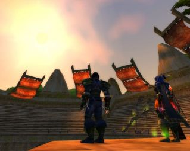
Le soleil mord le ciel bleu tandis que Jorian mord la poussière.
Son corps le fait souffrir de partout. Sa tête l?élance horriblement. Et l?air autour de lui semble s?être mystérieusement volatilisé? Remplacé par une masse ... Lire la suite >>>
aujourd'hui je me lèvent encore,il faut toujours se lever,pourquoi?travailler? pas envie!Je n'ait envie de rien faire et pourtant je me lévent dejeune et hop directe dans l'armure!Je me souviens des quelques jours avant celui ci...J'étais alors au northsire et j'ai vu une af ... Lire la suite >>>[Cevi] Poison
[i]Ca fait quelques jours que l'on m'a accepté comme aspirant dans l'ordre de la nouvelle aube. Je me sent un peu plus en sécurité. Et aussi moins seul. A part les membres de l'ordre la seule personne avec qui j'ai partagé des moments c'est Camylle, une jolie prêtresse, pou ... Lire la suite >>>[Lethiel] Dixième jour depuis l'Eveil...
Je nose relater nos retrouvailles avec Duvnarel dans les bois de Duskswood car cela devient de plus en plus Irréel ?[Meeleloo] Journal de Meeleloo - 17
Je me contenterai donc de rapporter létrange rencontre que nous avons fait à Stormwind.
Alors que nous nous promenions dans les rues de la ville, des cri ... Lire la suite >>>
Ca fait quelques temps que je n'ai pas continué mon récit. Il ne s'est simplement pas passé beaucoup d'événements marquants. Raconter mon quotidien fini par me lasser, et je suis certaine que pour finir ce n'est pas le plus intéressant. J'ai pourtant décidé de continuer de n ... Lire la suite >>>[Sheeana] Les chroniques Silverwind... Prologue 2
Une fois que les préparatifs du voyage furent terminés, nous nous sommes mis en routes vers Darnassus, la capitale elfique. Nous avons voyagé pendant toute une journée et nous sommes arrivé à l'auberge de Darnassus tard dans la nuit.
Fourbu, nous avons réservé une chambre ... Lire la suite >>>
Lune de l'Esprit [68]
Décade de la Chouette [20]
[Tymlis] L'apprenti forgeron
[Feufollest] Naissance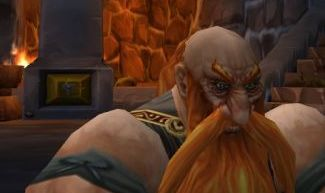 Bonsoir. Je m'appelle Tymlis et ce soir je prends le temps de m'arreter un peu et de m'assoir. De me poser à ma table et de sortir quelques feuilles de papier pour écrire à la lueur de la bougie.
Tellement de chos ... Lire la suite >>>
Petite j'étais espiègle toujours prête a faire une bêtise a faire brûler un scarabée ou un morceau de bois.[Jorian] Départ vers Booty Bay
Il faut dire que dans la hutte familiale il n'y avait pas grand chose a faire pour une petite troll. A
l'écart de la tribu, je ne voyais pas grand monde. ... Lire la suite >>>
[Lethiel] Onzième jour depuis l'Eveil...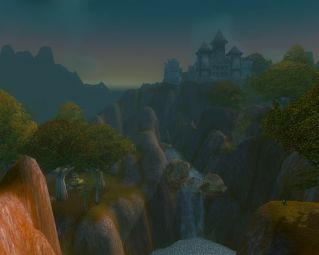
« ! // ! Je hais les voyages en gryphons. Imaginez un peu? Se retrouver d?un coup, plusieurs dizaines de mètres au-dessus du sol, balloté à tous vents sur le dos emplumé d?une immense bestiole, agrippé tant bien que mal? San ... Lire la suite >>>
Nous traversons une vallée luxuriante que lon appelle la vallée de Stranglethorn. Celle-ci est peuplée danimaux sauvages et dangereux tels des panthères, tigres et autres gorilles.[Agon] Dangereuse récolte
Le pire est quil nous est arrivé de croiser des gens de la Horde !
Heureusement, il sembl ... Lire la suite >>>
[justify]Le fait de se savoir invisible ne suffisait pas à rassurer le jeune druide alors qu'il évoluait au milieu d'un groupe d'arachnides géantes qui pouvait l'endormir d'une simple morsure si elles venaient à sentir sa présence. Mais la plante n'était plus qu'à quelques m ... Lire la suite >>>[Edelween] Le danger approche
Edelween se réveilla brusquement.[Chiron] La Nuit du Chat - Claira
La nuit était calme dans la forêt de Dranassus, Meeleloo dormait paisiblement à côté d'elle.
Edelween posa un tendre baiser sur son front quand l'appel retentit à nouveau, impératif il lui était impossible de l?ignorer.
L'esprit embrum ... Lire la suite >>>
[i]Elle naime pas cette ville, Ironforge. Trop de bruits, trop de mouvements, une atmosphère confinée où lon oublie bien vite les menaces extérieures pour louer un seul dieu, lor.[Loam] Récit
Seule la présence des gnomes continue à réjouir son cur : ces petits exilés lui semblen ... Lire la suite >>>
(effacé) ... Lire la suite >>>[Lethiel] Douzième jour depuis l'Eveil...
Si je devais n'utiliser qu'un seul mot pour décrire Booty Bay, ce serait le suivant : corruption. C'est une petite ville portuaire qui se situe après une énorme arène au coeur de Stranglethorn.[Chiron] La Nuit du Chat - Chiron
On peut y trouver des gobelins, bien entendu, des gobelins, des gobelins et enco ... Lire la suite >>>
L'air était frais, l'approche de l'été donnait au quartier des mages de Stormwind une allure de Parc Elfique.[Loam] Récit
Chiron ne remarquait même pas la luxuriante végétation courant le long des murs, ni l'affèrement de la faune locale dans ses activités quotidiennes. C'est tout j ... Lire la suite >>>
(effacé) ... Lire la suite >>>[Duvnarel] Pensées de Duvnarel - 2
Mes voyages se poursuivent inlassablement. Partout des conflits intérieurs rongent les sociétés. Partout mon espoir de découvrir le calme et la tranquillité est anéanti par la première rencontre locale. Le plus étonnant est de voir les peuples soi-disant alliés de la Horde s ... Lire la suite >>>[Albâtre] deux cris dans la nuit
Mon cri perce la nuit, je suis en train de naître au milieu du troupeau, à la lumière éloignée du feu de joie de notre campement. Le cri dun autre nouveau-né ShuHalo me répond ; ce cri sinscrit en mon âme, comme un appel, comme une réponse ; ce cri ... Lire la suite >>>[Loam] Récit
(effacé) ... Lire la suite >>>[Meeleloo] Journal de Meeleloo - 19
Avant hier, la blessure d'Edel n'était toujours pas refermée. Cela m'inquiète, mais elle m'a dit qu'elle avait toujours eu du mal à cicatriser, même avec l'aide la magie. C'est vrai qu'à part cette cicatrisation un peu lente, la blessure est propre et guérit bien. Je serais ... Lire la suite >>>[Chiron] Nuits de Southshore - Claira
La nuit précédente, à Southshore...[Chiron] Bon baisers de Stormwind
Elle la hélé de loin, et il sest laissé faire ; il est venu pour elle dans les collines dHillsbrad, un territoire neutre où ils pourront se rencontrer à nouveau à labri de la foule.
Elle arrive à cheval, et laperçoit de loi ... Lire la suite >>>
A l'issue de cette soirée là, il ne savait plus très bien, ni qui il était, ni ce qu'il devait faire, ni qu'elles étaient les intentions de la Voleuse, si tant est qu'elle en aie de précises.[Braindille] Attaque
C'est pour tenter de répondre a ces questions qu'il la cherchait ain ... Lire la suite >>>

Nos énemis sont en vus,
Déjà ils sont tous perdus,
Car ils n'auraient pas dûent
Attaquer notre Orgrimmar,
Pour cette foule de barbares,
N'étais q'un rêve, un espoir
... Lire la suite >>>

Décade de la Baleine [22]
[Chiron] Le Jour, la Nuit - Claira
Le jour.[Orosh] L'histoire d'Orosh; acte 10
Elle est beaucoup plus grave depuis quelle le connaît. Ses journées sont trop longues, elle les passe à rôder aux alentours des villes, ne sachant plus où se trouve sa véritable place. Elle ne se bat plus, plus vraiment, plus franchement, malgré lenvie c ... Lire la suite >>>
Acte 10 : Les Taurens...[Jorian] Plannification de la traversée
La forêt d'Ashenvale...
Encore une région où la paix avait perdu le combat, terrassée par la
rancoeur et les préjugés...
Ici, les elfes et les orcs s'affrontaient chaque jour sans répits. Et je
pris également part à ces combats...
Un soir ... Lire la suite >>>
[Tymlis] En route vers les Wetlands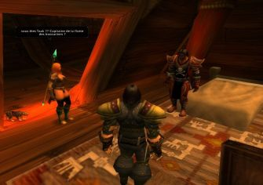
« / !! / Si j?en crois les dire de cette femme, l?homme qui se trouve devant moi se nomme Taak, et commande une flotte de marins ! Etant donné que nous parlions, avant que la femme nous interrompes, je suppose que cet ho ... Lire la suite >>>
[Meeleloo] Journal de Meeleloo - 20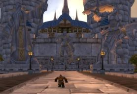Et me voila parti sur les routes, traversant Dun Morogh, passant à coté du site de Gol'Bolar infesté de Troggs, continuant vers le Loch Modan, évitant les Dark Iron.
Rapidement, en quelques semaines j'avais plus voyagé que ... Lire la suite >>>
Bon, ça fait un moment que je n'ai pas repris la plume. Ma vie a tellement changé ces derniers jours que je n'ai pas vu le temps s'écouler, et que j'ai l'impression de vivre sur un petit nuage. Alors je vais tâcher de reprendre dans l'ordre, ça me permettra de ... Lire la suite >>>[Albâtre] la voie à suivre
Chez nous, cest par la Chasse, que lon fait son apprentissage de la vie. Et moi la vie, jai commencé à lapprendre dans les plaines dorées du Mulgore. Jai respecté toutes les bêtes qui sont mortes sous mon arme.[Loam] Récit
Après un combat difficile, lorsque ma peau était avait ét ... Lire la suite >>>
(effacé) ... Lire la suite >>>[Jorian] La Bibliothèque Royal
« Le jardin Royal. J?ai demandé à un petit gnome accompagné d?une machine bizarre, embusqué derrière un buisson, et il dit que je suis dans le jardin Royal. Après avoir relu mes notes, j?ai compris être à la recherche de vieilles cartes maritimes, disponibles dans la Bibliot ... Lire la suite >>>[Albâtre] Etude : la Terre mère et les Shu'Halo
Je mélève en hauteur . Thunder Bluff . la cime des Anciens . le Hall des Anciens .[Duvnarel] Verre émeraude - Chapitre 1 - Rêve d'un Rêve.
Je massoies sous la tente, et je lis les deux tentures anciennes : lune est accrochée à la droite de Turak Runetotem, lautre à la gauche de Sheal Runetotem. Seul le crépitement du ... Lire la suite >>>
Chapitre 1 - Rêve d'un Rêve.[Jorian] Traversée de la Grande Mer
Duvnarel respira un grand coup et ce fut une surprise. Elle crut s'être réveillée là où elle s'était endormie, à Dolanaar, à l'étage de l'auberge. Elle avait pourtant suivi toutes les instructions de Tallonkai. Tout avait été fait comme il se ... Lire la suite >>>
[Tymlis] Ma rencontre avec Jyssina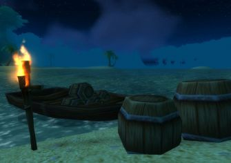
La nuit est tombée et les deux hommes travaillent sans bruit. Plus que trois tonneaux à charger? Plus que deux? Ouf.
Tout à sa tâche, Jorian n?a même pas le temps de se demander pourquoi il charge tous ces tonneaux sur une b ... Lire la suite >>>
[Jorian] Premier jour de la traverséeToute cette période est assez confuse, je me souviens courir dans tout les coins, allez d'un endroit à l'autre, aider des confrères nains...
Mais la chose étrange qui m'est arrivée c'est ma rencontre avec la petite Jyssina.
... Lire la suite >>>

« ! // ! Le Capitaine Taak Rogers vient de m?expliquer ce que je faisais, assis sur quatre bouts de bois, perdu à ses côtés au milieu d?une infinité d?eau.[Lethiel] Quatorzième jour depuis l'Eveil...
Il est au courant pour mon mal. Ca doit être un homme patient, ce n?est sûrement pas la première fois qu?il ... Lire la suite >>>
Jai fais un cauchemar au sujet de Duvnarel. Une étrange créature la décapitait Bah, ce nétait quun rêve, et je ne crois que peu aux prédictions que peuvent amener les rêves. Sans doute une vieille habitude du temps où jétais un guerrier Néanmoins, où que soit Duvnarel, ... Lire la suite >>>[Albâtre] L'appel de la Terre
Cest au camp Narache que se trouve celle qui menseignera le secret de la Terre, mont dit les maîtres chamans de Thunder Bluff. Cest au camp Narache que je me suis rendue.[Jorian] Second jour de la traversée
Je laisse les mots du prophète du camp Narache menvahir :
« - La Terre guide notre peuple, et no ... Lire la suite >>>
« ! // ! Le voyage doit durer une semaine, et nous sommes partie depuis deux jours, selon lui. Encore cinq jours, donc? Je ne connais plus l?attente, ni l?ennui. Je sais que par le passé, la perspective de rester coincé tant de temps, sur ces morceaux de bois, cerné ... Lire la suite >>>[Orosh] L'histoire d'Orosh ; acte 11
Acte 11: Retour en Azeroth[Sheeana] Lettre à Sheeana
Je montait dans le zeppelin confiant mais cela n'a pas duré. Ma potion ne
me fit quasiment aucun effet et je passais tout le voyage à trembler sur
le pont sous les moqueries et l'inquiétude des passagers présents... Je me
suis maudit d'être ... Lire la suite >>>
Ma très chère soeur,[Chiron] Pierres et Foyer
J'ai demandé à un gobelin de Ratchett de te transmettre cette lettre. J'espère qu'elle te parviendra vu le prix que j'ai du débourser.
Depuis ton départ, j'ai énormément changé. Ma chair s'est décomposée. Mes cheveux se sont décolorés. J'ai été inv ... Lire la suite >>>
*longtemps plus tard*
Le flux magique innervant le corps et l'esprit de Chiron fluctue si vite qu'il lui est impossible de discerner quoique ce soit de par ses sens naturels. Il n'essaie même pas d'ouvrir les yeux. Il attend, patiemment, l'ouverture du portail ... Lire la suite >>>
Décade du Lapin [26]
[Jorian] Quatrième jour de la traversée
« NE BOUGE PLUS ! » hurle le capitaine Taak Rogers? « ARRËTE !!! »[Lethiel] Quinzième jour depuis l'Eveil...
Jorian, les yeux injectés de sang, se débat comme un diable, mais le Capitaine Taak le maintient solidement, les bras serrés autour de lui. Heureusement, Jorian ne pense pas à se saisir de ses dagues? Il ... Lire la suite >>>
Deuxième cauchemar au sujet de Duvnarel Cela commence à minquiéter Je vais me rendre à Teldrassil afin de voir si elle nest pas réellement en danger.[Loam] Récit
Seconde chose, jai retrouvé ce Jorian lOubli errant dans les rues de Booty Bay. Et à présent je comprends pourquoi o ... Lire la suite >>>
(effacé) ... Lire la suite >>>[Tymlis] Liki, première rencontre
[Meeleloo] Journal de Meeleloo - 21
Depuis le jour où j'ai rencontré Jyss pour la première fois il semble que le hasard me l'ai ensuite toujours fourrée dans les pates.
Je ne pouvais plus aller quelque part sans entendre un "Monsieur le nain, Monsieur le nain". ... Lire la suite >>>

Toute la partie concernant la rencontre entre Meeleloo et Khannos ne s'est pas réellement produite, vu que les deux persos sont miens, et l'impossibilité de communication. Mais c'est la seule chose qui ne se soit pas produite.[Orosh] L'histoire d'Orosh; acte 13
Tant de temps déjà que je n ... Lire la suite >>>
Acte 13: L'honneur de l'homme.[Albâtre] Le secret du Feu
Entre les monts Alterac et hills'Brad, le risque de croiser des humains
est grand et les animaux sauvages sont dangereux...
Ma recherche de la Sylua fut donc extrêmement pénible... A proximité des
monts, j'ai été victime d'une série de ... Lire la suite >>>
J'ai commencé à rechercher le secret des éléments. Cest une quête que lon ne peut plus interrompre une fois quon la entamée. Jai découvert que je ne savais rien, je pressens que plus japprendrai, plus je comprendrai et accepterai cette infinie ignorance.[Jorian] Sixième jour de la traversée
Cest vers ... Lire la suite >>>
« ! // ! Taak semble inquiet, il a les traits tirés? Je me demande si cela à un rapport avec l?incident d?il y a deux jours? Mais je me suis calmé, enfin, je crois? Il ne devrait pas s?inquiéter. Je ne comprends pas vraiment ce qu?il s?est passé? Si ... Lire la suite >>>[Duvnarel] Verre émeraude - Chapitre 3 - Cristallisations
Chapitre 3 - Cristallisations[Lethiel] Seizième jour
Duvnarel ouvrit les yeux et constata qu'un visage familier était penché au-dessus du sien.
- Arowän, dit-elle avant de reconnaître son erreur.
- Toret'Guil, rectifia l'elfe.
- Où suis-je ?
- A l'abri pour le moment.
Elle voulut ... Lire la suite >>>
Fenrir est mort je l'ai tué car il m'avait énervé.[Lethiel] Pluie et Renaissance
Je doi retrouv Adalanë
Adalanë
Adalanë
Adalanë
Adalanë
Adalanë
J'ai eu uen letr d'el :
Mon amour, retrouve moi ce soir à Ashenvale dans notre lieu à nous, là où tout a commencé.
Je t'emmènerai avec moi.
Adal ... Lire la suite >>>
- Approche mon amour, tout sera bientôt comme avant.Marche pour la Paix
Lelfe quil avait tant aimée et quil croyait morte depuis quatre ans se tenait à quelques pas de lui, bel et bien vivante. Malgré le voile brumeux qui lui masquait tout son environnement, elle, il la voyait distincte ... Lire la suite >>>
[Evénement divers]
Première Marche pour la Paix organisé par la Pax Legatus, rassemblant de nombreux membres de la Horde et de l'Alliance pour un grand défilé allant de Grom'Gol à la ville de Stormwind.
Coup d'état de l'Archevêque Benedictus
Première Marche pour la Paix organisé par la Pax Legatus, rassemblant de nombreux membres de la Horde et de l'Alliance pour un grand défilé allant de Grom'Gol à la ville de Stormwind.
[Mise à jour 1.4.1]
Profitant de l'agitation suscitée par la Marche pour la Paix, l'Archevêque Benedictus prends le pouvoir à Stormwind, par un coup d'Etat. Il instaure un sévère régime de respect de la Lumière. Le Roi ayant disparu depuis plus de dix Décades, Benedictus garde le pouvoir.
[Jorian] Dernier jour de la traversée
Profitant de l'agitation suscitée par la Marche pour la Paix, l'Archevêque Benedictus prends le pouvoir à Stormwind, par un coup d'Etat. Il instaure un sévère régime de respect de la Lumière. Le Roi ayant disparu depuis plus de dix Décades, Benedictus garde le pouvoir.
« ! // ! Peut? [effacé par l?eau] écrire? Sommes? [effacé par l?eau]? Tempête? Je? [effacé par l?eau] [effacé par l?eau] Carol !! Carol? Je viens? [effacé par l?eau] sauver? Carol. »[Alyssa] Soleil = vicelard.
Le vent hurle comme une harpie égorgée. La pluie tombe, par baquets entiers, le tonnerre ... Lire la suite >>>
Le soleil est vicieux. Oui, vicieux. Pourquoi faut-il toujours que ses rayons trouvent un moyen pour contourner vos rideaux ? Un petit espace suffit, rien qu?un petit, tout petit, minuscule, microscopique espace?et voilà que le soleil s?y infiltre. Quelle injustice.[Braindille] La marche de la paix
La jeun ... Lire la suite >>>
[Jorian] Voyage en Durotar
J'étais a Strangleronce, en train de dépecer un raptor devant le camp Grom'kol, quand j'ai vu Whiteleater, un tauren de la Terra Legio, qui passer devant moi habillé d'une curieuse robe... blanche...
- Tu te maries ?
- Non... je vais aller voir Halaa pour la marche de ... Lire la suite >>>
[i]A l?est de Kalimdor, Durotar?[Tymlis] Descente en prison et nouvelles connaissances

Qui aurait pu imaginer à la vue de ces plaines désertiques, inhospitalières, qu?elles abriteraient un jour le c?ur vibrant de toute une race ?
L?esprit de Durota ... Lire la suite >>>

[Feufollest] Un triste jour...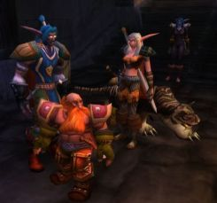Trés rapidement Liki et moi découvrons que nous sommes tout les deux engagés pour régler quelques problèmes de sécurité dans la prison de Stormwind.
Mais l'endroit est mal frequénté, les prisonniers sont sortis de leur ... Lire la suite >>>
Cétait un triste jour, comme tous les jours dans les prairies de Tirisfal.[Jorian] Orgrimmar
La veille, javais reçue une lettre de mon ancien maître. Celui qui mavait initiée aux arcanes et nourrit entre ma fuite et mon départ pour Durotar.
« Chère élève,
Tu as une dette envers les répr ... Lire la suite >>>
« Thrall détient Carol », indique le ruban noué à la dague gauche.[Jorian] Rencontre avec Thrall
« Tu dois tuer Thrall », indique le ruban noué à la dague droite.
Jorian rit en lisant ces messages. Il rit comme il a rit tout le long du chemin qui l?a conduit jusqu?aux Grandes ... Lire la suite >>>
[Lethiel] Dix-septième jour depuis l'Eveil...
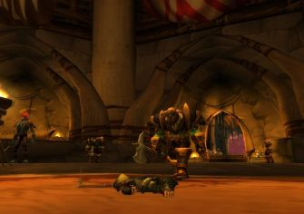
Le corps de Jorian vole tel un pantin désarticulé sur quelques mètres avant de s?écraser au milieu de la salle du Conseil.
L?imposant Orc en armure qui l?a traîné jusqu?ici s?approche alors du corps inconscient du Voleur ... Lire la suite >>>
Depuis la mort du nécromancien, je me sens apaisé.[Valnar] Rencontre
Depuis également que jai retrouvé Duvnarel et quelle sest donnée à moi.
Est-ce cela quêtre amoureux ? Je lavais oublié, cest tellement Beau, doux, intense.
[i]Au lieu de rêver, tu ferais mieux de te concentrer sur ... Lire la suite >>>
Journal du Sujet Valnar Burningsoul - Archives du Sanctuaire des Mages - Stormwind.[Jorian] Retour aux Royaumes de l'Est
8ème jour de la Décade du Lapin - Ère du Renouveau
Je commence ce Journal sous les conseils de l'archimage Malin, J'ignore pourquoi, il m'a juste dit que ce serait une bonne chose...Je ... Lire la suite >>>
Ils m'ont renvoyé chez moi... Pieds et poings liés.[Chiron] Vieux Scooty
Je devais être jugé par les miens. ... Lire la suite >>>
Un vent frais et le chant à l'intensité croissante des oiseaux du Loch Modan font sortir Chiron du sommeil. Père Soleil, dardant sa couronne de flammes à l'horizon, baigne doucement son corps d'une chaleur bienveillante, le couvrant d'une chappe de lumière.[Ereghion] Lettre 1
Il s'étire do ... Lire la suite >>>
Comment commencer cette lettre, cela fait plusieurs jours que je me pose la question. Et apparemment cette interrogation n'est qu'un prétexte pour en repousser l'écriture.[Clothilde] Visite inattendue
Donc, point d'entrée en matière recherchée ou de tournure de phrase alambiquée, je n'écris pas pour la ... Lire la suite >>>
Voilà trois jours que je marche dans les bois. Bien que le paysage soit magnifique, je me sens comme oppressée. Les elfes m'ont prévenue, la corruption de Grangebois gagne peu à peu les terres avoisinantes. Je pensais trouver une cabane, quelque part dans la verdure. Mais je ... Lire la suite >>>[Valnar] Cauchemar
Journal du Sujet Valnar Burningsoul - Archives du Sanctuaire des Mages - Stormwind.
9ème jour de la Décade du Lapin - Ère du Renouveau
La nuit a été dure, Je le sentais, J'ai reçu des visions de lui...il s'attaquait à des croisés, ce matin, j'avais le goût du sang dans ... Lire la suite >>>